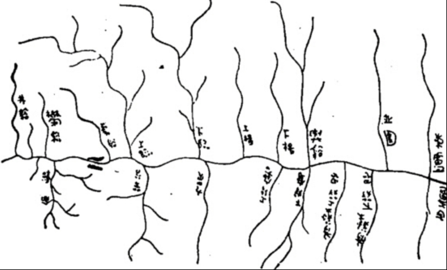
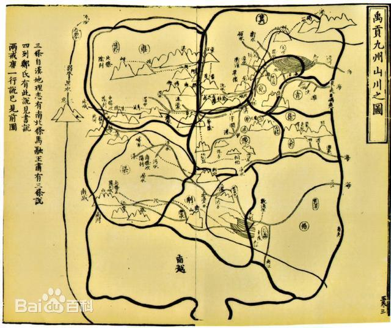
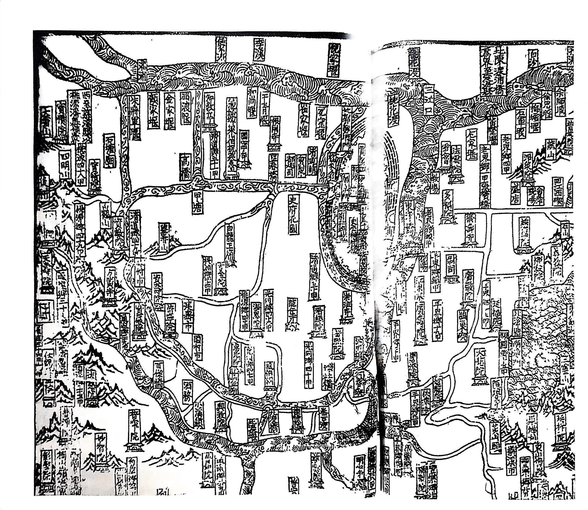
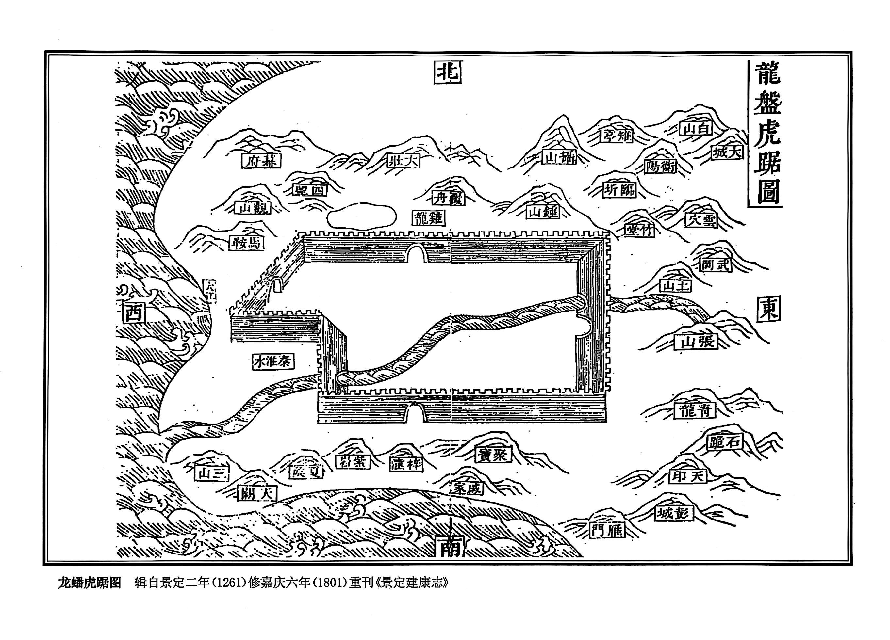
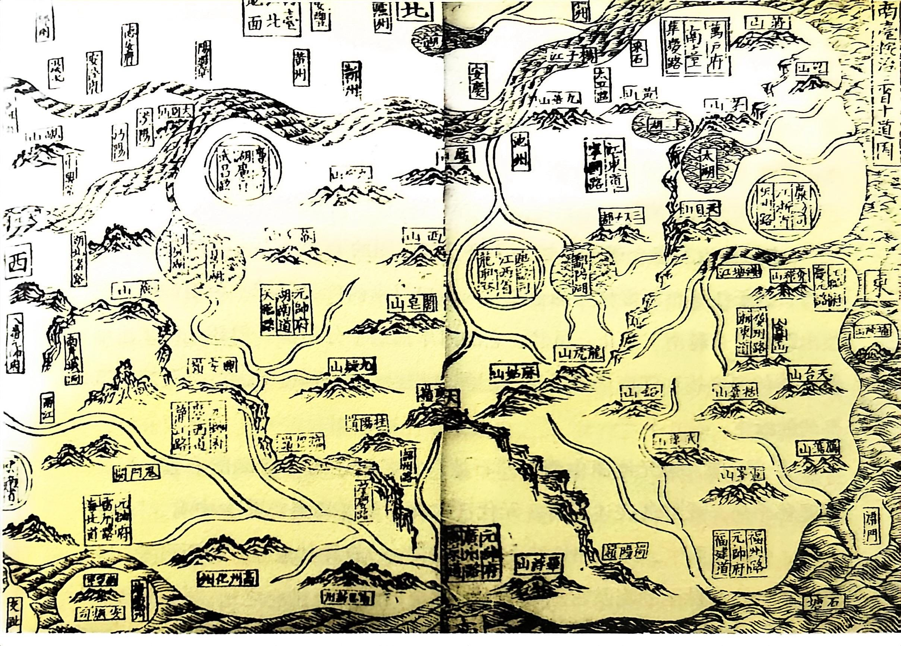
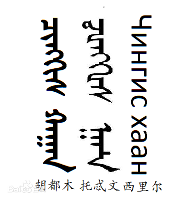
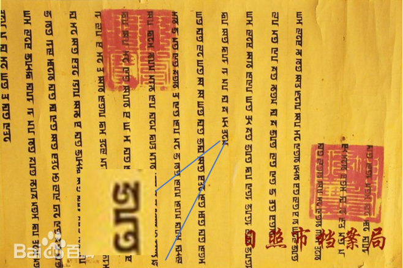
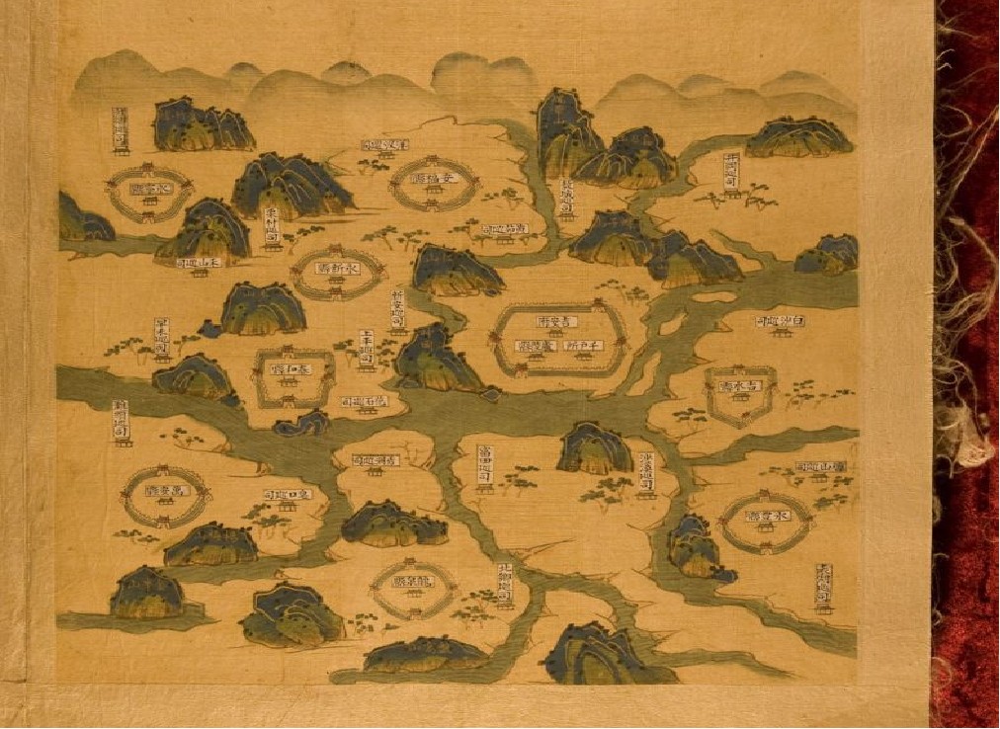
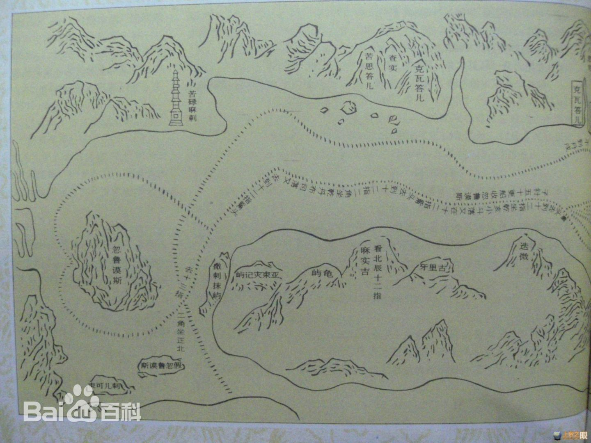
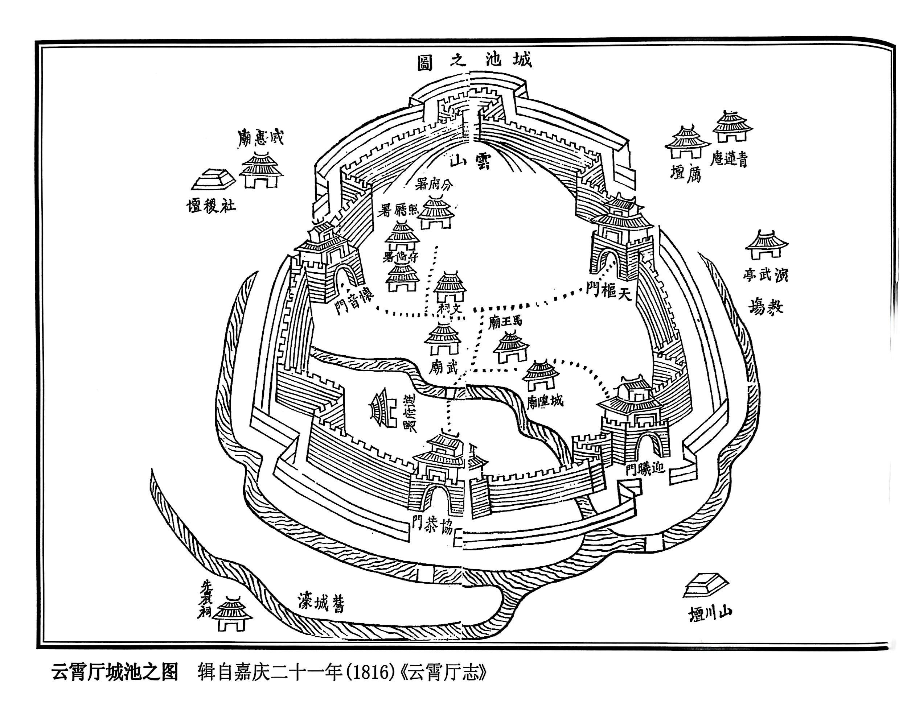

秦隶，是篆书向成熟隶书过渡的形态，仍保留不少篆书圆转笔意，同时出现隶书平直、波磔萌芽，属战国晚期秦国日常实用书体。

秦隶（古隶）主要盛行于战国晚期秦国→秦朝→西汉早期，多用于官府文书、基层行政、民间实用书写，非典礼专用字体。

晋隶，指晋朝时期的楷书，保留隶书的部分风格特征，属书法派别。该字体由汉代隶书演化而来，魏晋时期逐渐向楷书转变，笔画形态上提按顿挫分明，波挑减少而折笔趋方，仍带有隶书意趣。
晋隶作为西晋时期通行的官方正体，广泛应用于朝廷诏令奏议、碑刻铭记、经籍缮写、地图注记、官方档案与礼器题铭等庄重正式场合，既是政务文书的规范用字，也是彰显典重肃穆的礼仪性书体。
《龙盘虎踞图》是南宋地图学家于景定二年（1261）绘制完成的城市地图，收录于《景定建康志》。


宋代地图数量大幅增多，主要源于中央集权下全国疆域、户籍、赋税与边防管理的迫切需求，朝廷多次组织全国性地理普查与图经编纂，加之雕版印刷技术成熟让地图得以批量刊刻流传，同时科举与教育发展推动士人重视地理之学，城市经济繁荣、河渠漕运与边防战事也促使各类城池图、水利图、边防图、交通图大量绘制，使得两宋制图空前繁荣。
宋代地图上的字体以楷书为主，约占 85%-90%，用于绝大多数地名、注记与正文；隶书约占 5%-8%，多用于碑额、图名等庄重标题；行书 / 草书约占 2%-5%，常见于跋文、题记或少量手写注记；瘦金体、篆书等仅零星出现，占比不足 1%。
楷书在宋代是官方文书、科举试卷、典籍刊刻、碑志题铭的主流字体，也是日常书写、公文政务与教育识字的通用正体，应用极为普遍。

元代传世地图多以楷书书写，这与元代行政结构高度吻合。蒙古统治者虽主掌军政，但行政文书、舆图绘制等技术性文职多由汉人吏员与儒士承担；加之唐宋以来官方文书与地图题记本就以楷书为规范字体，因此现存元代地图呈现以楷书为主的面貌，是合理且必然的结果。
元代多民族并存，但汉文始终是行政主体文字之一。此外，八思巴文、蒙古文确实存在，但不进入地图注记体系。


《郑和航海图》原名《自宝船厂开船从龙江关出水直抵外国诸番图》，是明代航海图籍，约成于洪熙元年至宣德五年（1425—1430）间，为郑和下西洋航路的记录。


技术层面，雕版印刷的大规模普及催生了手绘与刻本两套字体体系：手绘地图以隶书为标题、行楷作注记，刻本地图则发展出横细竖粗、易刻易读的宋体，雕版印刷的标准化与多样化进一步推动了字体的多元格局。此外，明代地图功能从单一的行政、军事扩展到文人山水舆图、航海图、世界地图等多种类型，不同功能对字体各有侧重，加之隶书庄重但书写效率低，楷书、行楷兼顾清晰与效率，宋体则便于印刷，使制图者根据位置、载体与功能灵活选用字体，最终形成多元并存的局面。
明代地图多用隶书作标题，主要源于文化风气与制图主体两方面的变化。一方面，明代中期起，文坛书坛盛行复古思潮，隶书因其古雅、正统的视觉特征，成为彰显文献品位与仪式感的标志性字体，形成了“用隶书装典雅”的风气。另一方面，随着雕版印刷普及，地图作为书籍插图对美观度的要求提高，加之罗洪先、杨慎、徐霞客等文人 学者亲自参与制图，将书法审美带入地图绘制，自然形成“标题用复古隶书、内容用工整楷书”的搭配方式，既满足了庄重典雅的礼仪需求，也兼顾了地图的实用与审美功能。

清代地图的字体以楷书、宋体（仿宋）为绝对主流，隶书仅少量用于标题。 晚清则在传统基础上，叠加西方印刷技术、拼音标注、简化字萌芽、机械制图字体四大影响，字体走向多元与实用化。